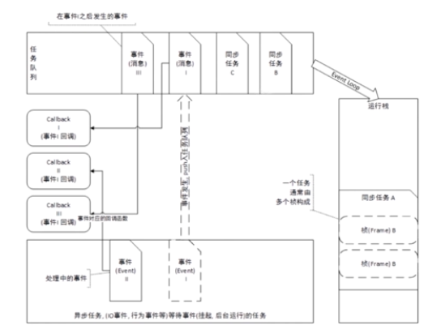

JavaScript 是单线程运行的，从上到下执行。
任务队列分为同步任务和异步任务。执行过程中，异步任务要挂起，先执行同步任务，所有同步任务执行完成后，才会执行异步任务。
异步任务包含：
例题1：
以下代码的输出结果：
console.log(1);
setTimeout(function(){
console.log(2);
},0)
console.log(3);
console.log(4);
// 答案：1 3 4 2
解释：考察同步任务和异步任务的优先顺序。setTimeout/setTimeInterval 是异步任务，console.log 是同步任务。
例题2:
以下代码的输出结果：
console.log('A');
while(true) {
}
console.log('B');
// 答案：A
解释：考察同步任务和异步任务的优先顺序。因为均为同步任务，执行 while 语句时无法结束循环，因此不能执行 console.log('B') 的语句。
例题3:
以下代码的输出结果：
console.log('A');
setTimeout(function(){
console.log('B');
})
while(1){
}
// 答案：A
解释：考察同步任务和异步任务的优先顺序。
例题4:
以下代码的输出结果：
for(var i=0; i<4; i++) {
setTimeout(function(){
console.log(i);
},0);
}
// 答案：4 4 4 4
解释：考察异步队列的任务插入时间。同步队列执行完成后执行异步队列，但异步任务只有到达执行时间，才会将任务放在异步队列中。因此在本题目中，当同步队列（for 循环）执行完成时，异步队列仍为空。setTimeout 的延迟时间为 1000ms，当 1000ms 后，Timer 定时器才会将函数题扔进异步队列中执行。

代码解析过程：
浏览器引擎识别 setTimeout 为异步任务，因此 Timer 模块将该语句从运行栈中取出，等到延迟时间后，将其放到任务队列中。
当运行栈（同步队列）已经为空，再从异步队列中取出任务到运行栈中执行。执行完成后，运行栈为空，再重复循环该过程。这一过程就是事件循环。